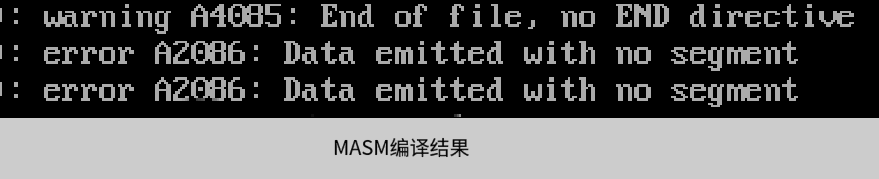
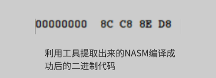

关于我
欢迎来到我的博客！这里汇集了我对编程和技术的洞见和总结。本站内容分为几个主要类别，涵盖从具体技术实现到编程理念的广泛话题。
主要内容分类
- 项目工程：深入探讨技术的实现细节和理解。
- C/C++：围绕C/C++语言的技术点和编程技巧进行详细总结。
- 程序员哲学：分享程序员在职业生涯中应该具备的哲学理念和思考方式。
想要了解更多具体内容，您可以访问文章分类页面。
联系我
如果您有任何问题或想要交流，欢迎通过关于页面与我联系。
感谢您的阅读和支持，希望我的博客能为您的技术旅程带来帮助！
本博客的汇编代码的环境规范
MASM和NASM
test here:
最近在完成x86-32架构的一些代码和要点的时候，对整个编译环境做了一些整理，我要讲一些关于在以后的博客中一些环境规范。
之前的汇编代码是在MASM编译器格式的要求下写成的，就如每个程序开头都要有：
1 | cs:code ds:data |
这是要想通过MASM编译，程序必须要有的结构。注意，这不是所有的汇编程序都要有的结构，只是MASM编译器所要求的结构。如果你想通过别的编译器，就是写出对应编译器所要求的程序结构。
我先后在MS-DOS中使用MASM编译器，在DOSBOX中使用MASM编译器，在Oracle VM VirtualBox中使用NASM编译器，后来不管是在CentOS，还是Debian系列的Ubuntu，Kali和debian，都使用的是NASM编译器。
同时呢，NASM编译器是linux系统自带的汇编编译器，而MASA编译器是微软的编译器，点到为止。
所以你应该知道我接下来所要做的：以后的汇编程序，我会首先按照NASM编译要求编写，但也会有MASM编译要求的汇编程序。
每一个程序的开头，我都会注明汇编环境，用来提醒读者，这个程序应该用什么来编译，作者将这个程序是运行在什么系统下的。
NASM被支持的系统很多，是一个很受欢迎的编译器，至于为什么，我想一个最重要的一点就是：可以将任何汇编代码编译成二进制。
什么意思呢？就是说：
如果.asm文件中只有两行代码：
1 | mov ax,cs |
那么NASM编译器就会将这两行代码编译成对应的二进制，而MASM编译器就会报错:

这是我从MASM编译器中抓取出来的，提示中出现没有定义段，没有文件结尾等错误信息。
而在NASM中，是直接编译成功:

NASM的更好的地方
上述图片是这两个行代码在x86-16架构下的机器码，处理器在拿到这个机器码的时候，就能够执行，至于在执行完这两条指令后会怎么样，我们可以先不关注，也可以让其变着花样去执行其他代码：直接让处理器休眠，或者直接让处理器循环执行一条无意义指令等，没必要一定要写出诸如文章开头给出的程序结构的尾巴部分。
能够这样编译的好处，我这里就不明说了，等后续编写MBR（Master booting recoder)代码时，你就会发现，MASM是编译不了这些类型的汇编代码的。
好了，说了这些，其实也是在推荐大家使用NASM编译器，这个编译器是真的方便。
环境
对于编写的环境，我向来是倾向于直接在DOS系统中编写汇编代码，后来开始在windows系统下使用文本编辑器来写汇编代码，写好后直接改后缀名为.asm，再后来，为了更加熟练的使用linux系统，我开始在Ubuntu系统中来编写汇编代码。
其实编写环境对于代码的执行是无碍的，主要是运行环境。
由于汇编代码是直接对硬件操作，所以我们需要直接拿到计算机的最高权限-直接改写硬件。这里最优的选择是使用虚拟机，创建裸机来运行我们编写好的汇编代码。
之前写了很多的汇编实验代码，一些有趣的，带有测试性的，启发性的汇编代码都被我删掉了。我是不小心的，因为有一次在配置环境的时候，不小心将所有的镜像文件都删除了（代码都保存在镜像文件中）。
当时发现的时候，想着是直接从回收站回收就好了，结果发现，回收站没有（删除的文件占用内存太大，直接清理不会放到回收站里），我只好”大不了，从头来过“。
后续
由于后续的代码不见了，而且代码的编译环境改变（从MASM到NASM），所以之前未完成的文章讲解:
01-比较简单的x86-8086汇编实验:将数值显示到屏幕上
之后的02实验我会重新编写代码（适应NASM编译器）来讲解。
这里还要讲一下关于x86-8086的写法，以后的文章可能会写成x86-16或者x86-32之类的写法。
这里做一个映射：
x86-8086 = x86-16
而x86-32是更”高级“的处理器的写法。
以后再详细说明。
If you like this blog or find it useful for you, you are welcome to comment on it. You are also welcome to share this blog, so that more people can participate in it. All the images used in the blog are my original works or AI works, if you want to take it,don't hesitate. Thank you !